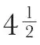
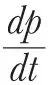
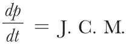

英文
英文泰特
编者按
1879年11月，詹姆斯·克拉克·麦克斯韦逝世。在4个月后的这篇短文中，苏格兰物理学家彼得·格思里·泰特（他从小就认识麦克斯韦）热情称颂了麦克斯韦的成就。麦克斯韦在20岁之前就开始发表有影响力的原创研究论文。1864年，他发表了一篇首次完整阐述其电磁理论的论文。在这篇里程碑式的论文中，麦克斯韦抛开一定距离外的实际效应去解释电磁现象，并就光的本质提出了一个统一性的观点。格思里认为，麦克斯韦深刻的思考并没有通过他那些颇有影响的演讲全部体现出来。不过，与他那堪称逻辑清晰之典范的专著不同，他的即席演讲在某种程度上则更自由地展现了他那对听众来说过于跳跃的想象力。 英文
应汤姆孙爵士、洛克耶先生以及其他一些人士的要求，我将对麦克斯韦的科学工作进行介绍。介绍必然是简略的，但我希望足以让即使没有数学背景的读者也能了解他对现代科学的伟大贡献。我与麦克斯韦在学生时代就已经熟识，因此，我毫不犹豫地接受了这个任务。 英文
如果说数学家的头衔只属于那些不论是否试图理解每一步的意义，都对符号了如指掌的人（事实通常就是这样），那么克拉克·麦克斯韦就不是、也从来不试图成为这样的一流数学家。他总是不慌不忙地“完稿”，并且尽可能避免复杂的分析。他更喜欢以几何或物理的形式表示自己所研究的问题，并且总是借助于以下方式来完成下一步的研究：在必要时，将这些表示转化成符号的形式。在他众多的伟大著作中所出现的较少的符号，在需要的时候似乎又能拓展成为直接触及主题的成熟的篇章，从这些方面来看，他的著作与威廉·汤姆孙爵士的十分相似，他在早年就很有远见卓识地把爵士当作自己的榜样。 英文
毫无疑问，为每个问题建立思维上的表示，这个习惯是麦克斯韦作为一名研究者能够获得巨大成功的主要秘诀之一。除此之外，他还拥有卓越的洞察力和非凡的意志力。他的思路清晰，堪比法拉第。从数学家一词的这种（真正的）意义来说，麦克斯韦就是一位最高层次的数学家。 英文
然而，麦克斯韦的思维之敏捷，连他自己都无法控制，这使得他的讲座只能被极高层次的学生所接受，而其他人则很难从中受益。他的著作和演讲稿（通常是对手稿的的再一次重温）是表述清晰精确的典范；但是他的即席演讲却因为极富想象力的风格而使听众难以理解。 英文
麦克斯韦最初的工作在他年轻时就已经着手展开。他发表的第一篇论文《论椭圆曲线及多焦点椭圆曲线》由福布斯教授代他在爱丁堡皇家学会的会议上宣读，并收录在《爱丁堡皇家学会会刊》中。当时是1846年，麦克斯韦尚不满15岁。那时的他只学过一两本欧几里德的书和最基本的代数基础。紧接着，他又写了另外3篇没有发表的文章，我有这几篇文章的拷贝，它们分别是：《笛卡尔椭圆》《芫菁科昆虫形曲线和芹亚科植物形曲线》《三焦点曲线》。这些建立在严格的几何形式上并且被分成论题连贯的文章，可以用来研究具有以下形式的方程所描述的平面曲线的性质：
mr + nr' + pr" + … = 常量
r，r'，r"等是从一个给定的固定点到曲线上某一点的距离，m, n, p等仅仅是一些数字。麦克斯韦用容易弯曲但不能伸展的绳子，给出了一种理想的绘制这样曲线的一般方法。当方程中只有m和n两项时，如果两者同号，就得到普通的笛卡尔椭圆，如果两者异号，就得到麦克斯韦所谓的芫菁科昆虫形曲线和芹亚科植物形曲线。在每种情况下，麦克斯韦都给出了在任意一点作切线的简单几何方法，并且很好地处理了曲线其他方面的性质。 英文
1847～1850年，克拉克·麦克斯韦就读于爱丁堡大学，在此他并不需要去学那些学位要求的常规课程，而是被允许在既无人帮助也无人指导的条件下在自然哲学与化学实验室工作。因此，他在实验中自学了很多东西，而这些是其他人很难从书本中或课堂上学到的。他的阅读非常广泛。大学图书馆的记录显示，他在这些年中借回家研读的书有傅立叶的《热力学理论》、蒙日的《几何学说明》、牛顿的《光学》、威利斯的《力学原理》、柯西的《微分计算》、泰勒的《科学回忆录》等高水平著作。这些书他全部通读，而不是仅仅翻阅一下。很可惜图书馆没有保存他在馆内阅览的书单。麦克斯韦这段时间持续学习的成果之一是发表在《爱丁堡皇家学会会报》上的两篇详细论文。第一篇《论曲线滚动理论》（1849年），这是一篇纯数学的论文，文章给出了大量简洁而恰当的例子。第二篇是《论弹性固体的平衡》（1850年）。考虑到作者当时的年龄，这可以被认为是他最不寻常的研究之一。麦克斯韦运用一系列特殊的假设，重新构造了已经由斯托克斯给出的方程。他将这些方程应用到许多非常有趣的情况中，比如圆柱体的扭曲、通过在玻璃板后形成局部真空的方法实现反射式望远镜的巨大镜面的构造、奥斯特的水压缩装置的理论。此外，他还将其方程应用于张力（向一个垂直穿过透明板的圆柱体施加力偶后在透明平板中产生的）的计算，以及对同样产生的双折射结构的研究（用偏振光）。他无法解释为什么在云母、杜仲胶以及其他物体中一旦产生了这种结构就会持续存在。20年以后，他又重新回到这个题目，并于1873年向皇家学会宣读了他非常美妙的发现——由粘性液体中的切变造成的暂时双折射。 英文
在剑桥读本科时，麦克斯韦完成了最终于1856年发表在《剑桥哲学学会学报》上的论文《论法拉第力线》，这篇文章是他后来的伟大著作《电磁学》（1873年）的雏形。1853年，他曾给我看过这篇论文的大部分手稿。这篇论文本身就十分有趣，但更重要的是它显示了走向未来辉煌成就的第一步。麦克斯韦关于流体的观点是，流体不可压缩，没有质量，但是要克服空间中的某种摩擦力，这无疑采用了汤姆孙于1843年从稳定热流和静电现象之间类推出的结果。 英文
关于这个主题还有另外5篇文章，以《论物理力线》为题发表在1861～1862年间的《哲学杂志》上。1864年，他的伟大著作《电磁场的动力学理论》问世了。这篇文章被收录在《自然科学会报》上，可以将其看作对《电磁学》专著中所阐述理论的第一次完整论述。 英文
近年，他得出了以下结论：对于这些遵循拉普拉斯方程的类似物理量，比如热传导或没有质量却不可压缩的流体运动来说，含有哈密顿算子▽的四维表示法是最佳的表示方式。接着，他在电学研究中给出了所有更重要的物理量的四维形式，然而他并没有在建立表示方法的同时进行计算。我在别处（《自然》，第7卷，第478页）讨论过这项伟大工作中的多个重要发现，这本身就足以使其作者跻身最伟大的科学家行列。我可以在这里说，这项工作的目标就是，至少在涉及电磁力时，弄清“超距作用”，并且要通过光现象所需的介质应力和运动来解释它们。麦克斯韦指出，在这种假设下，光速为电磁单元与静电单元之比。因为这个比值和光速都可以由完全独立的实验确定，所以上面的理论可以用极为严格的初级实验来检验。但是，目前这两个物理量都还没能在2%～3%的误差范围内被清楚地认识，每个量的最可几数值当然比分散的数值更加集中。现在毫无疑问，麦克斯韦电现象理论建立的基础和光的波动学说的基础一样可信。但是，这个理论在其创建者的毕生努力下也还是处在初级阶段，它的合理发展可能还需要整整一代数学家的努力。 英文
以上并不是麦克斯韦利用在剑桥读本科期间的大部分时间来完成的唯一重要的工作。因为直到他在剑桥哲学学会的会议上宣读了一篇著名的论文《论弯曲引起的表面变换》，并于1854年3月发表在《剑桥哲学学会学报》上，他才获得了学位。高斯和其他一些伟大的数学家都曾经详细研究过这个课题，但是从简洁的角度来看，他们的方法还有很多需要改进的地方。克拉克·麦克斯韦无疑完成了后续的简化工作，并且将其简化到了这样的程度：很难想象任何一个后继研究者在简化现有的新模型时，能达到像麦克斯韦简化旧模型时那样的程度。他的很多结果，是对原有理论的丰富，尤其是他对弯曲线所作的处理。但问题是，除了其中几乎显而易见的部分，这些结果都没有实现普及。 英文
麦克斯韦的下一个伟大著作是《关于土星环运动稳定性的评论》，这篇文章在1857年获得了剑桥大学的亚当斯奖。这项令人称赞的研究在1859年被印成了小册子。拉普拉斯在他的《天体力学》中指出，均匀的固体环不可能持久地围绕行星转动，因为，即使环的密度调整到可以使其避免分裂的程度，一个微小的扰动也会不可避免地导致其塌陷。麦克斯韦从寻找使一个固体环稳定所需的均匀度开始。他发现，可以通过将一个卫星与这个环作刚性连接来实现环的稳定，其中卫星的质量等于环质量的

倍。但是由于这种方法与观测不符，于是就需要极精巧的调节方式，而这种调节方式也没有在其他地方看到过。不但如此，为了避免环出现类似暴露在强力下的液体那样的表现，环的材料必须具有足够的硬度，而这种硬度远远超过了任何已知材料的硬度。 英文
因此，麦克斯韦放弃了固体环的假设，开始设想一个由等距的相同行星组成的环。他指出，连续的液体环无法保持稳定，但是当它破裂成多个卫星的时候就可能达到稳定状态。他极为巧妙地论述了在各种假设的环结构中必须穿过环的或自由或受迫的波的影响，并且指出，唯一一种能够动态稳定存在的环形结构必须由大量分离的物质组成，这些物质围绕行星转动，其速度取决于它们到行星的距离。然而，即使在这种情况下，由于不同环之间的相互作用，土星系统也不可能持久稳定。因为这种相互作用必然会导致整个系统向内外两个方向扩散。但是，如果外环密度比内环密度大，外环直径很小的增大就能平衡内环直径很大的改变。这与环被发现以来所观察到的不断变化是一致的。麦克斯韦描述了一个独特而又简洁的机制，用它可以很容易地说明由相同卫星组成的环的运动。 英文
麦克斯韦的另一个研究课题是颜色的感知、基础色觉以及色盲的本质。这项工作无论是从实验角度还是从理论角度来看都极为成功。他最早关于这些问题的文章诞生于1855年，第7篇则发表于1872年。“由于他在颜色组成方面的研究和其他光学方面的论文”，麦克斯韦在1860年获得了皇家学会颁发的拉姆福德奖章。虽然人们知道或者猜测出颜色的三原色已经有很长一段时间了，例如杨曾经（很可能正确地）把三原色归因于存在三种主观色觉，而布鲁斯特错误地*猜测三原色是客观的，但是麦克斯韦却是第一个将实际测量引入色觉这个课题的人。他在实验中证明了，任何颜色C（以照度和特性的形式给出）都可以用三种任选的标准颜色X，Y，Z按照下面的公式表示出来：
C = aX + bY + cZ
其中，a，b，c是数值系数，可以取正也可以取负；等号表示“匹配”，加号表示“叠加”，减号表示把这一项移到方程的另一边。 英文
现在麦克斯韦的这些研究已经是众所周知的了，特别是后来亥姆霍兹关于生理光学的伟大工作使得这个研究课题吸引了很多注意力，因此，我们就不需要在这里进一步详细讨论它们了。 英文
麦克斯韦最后一项伟大的研究是他那套卓越的关于气体动力学的丛书。这套丛书的内容与物体离散粒子的大小和相互作用定律等问题密切相关。动力学理论似乎最早起源于伯努利，但是他的后继者逐渐回归到关于粒子吸引和排斥的统计理论上，就如博斯科维克所做的那样。赫拉帕斯（1847年）似乎是第一个重新注意到气体压力动力学理论的人。焦耳在1848年计算了氢气和其他气体微粒的平均速度。科隆尼格在1856年（《波根多夫年鉴》）考虑到了这个问题，但是除了得到气体的重量只有静止气体微粒的一半这一惊人结果之外，他似乎并没有进一步发展焦耳的结果。 英文
在不久之后（1859年），克劳修斯取得了巨大的进展。他用动力学理论成功地解释了气体体积、温度、压强之间的关系，膨胀造成的冷却，以及气体中缓慢的热扩散和热传导。他还研究了气体微粒的平均自由程长度、给定空间中的粒子数以及粒子碰撞过程中的最小距离这三者之间的关系。克劳修斯工作的最大价值在于，他在处理这个问题时，引入了概率论的方法。 英文
然后就是克拉克·麦克斯韦。他第一篇论文的题目是《气体动力学理论图示》，于1860年发表在《哲学杂志》上。他通过一个非常简单的过程来处理许多完全弹性小球的碰撞。他首先研究了所有小球的质量都相等的情况，然后研究了含有不同质量小球的情况。他由此证明了盖·吕萨克定律，即在同温同压下，所有气体单位体积内的粒子数相等。他把气体的摩擦力解释为相邻气层之间微粒的相对运动，并且指出粘滞系数和气体的密度无关。他从斯托克斯对粘滞系数的计算出发，第一次推出了气体平均自由程的近似值，由于缺少数据，这个数值是无法从克劳修斯给出的关系中得到的。他把自己用扩散动力学理论计算出的结果和格雷厄姆一个实验的结果进行比较，发现二者能够很好地吻合。麦克斯韦还估算出了空气的热导率，并且指出，非球形粒子在碰撞中能将部分平动动能转化为转动动能的假设与已知的空气的两种比热之比不符。 英文
几年后，他做了一系列很有价值的实验，来确定不同温度下空气和其他气体的粘性。这些工作的结果发表在1866年的《自然科学会报》上。在该杂志接下来的一卷上，他又发表了修正后的理论，此理论中不再把气体粒子视为完全弹性小球，而是认为粒子之间存在着与相互距离的五次方成反比的排斥作用。这篇论文包含一些非常有力的分析，这使得他可以为了理论的重要应用而进行数学理论上的简化。结论中给出了3个特别重要的结果，并且这些结果和气体粒子之间的相互作用模型无关。它们是：
英文在之后的几年中，麦克斯韦发表了另外几篇关于动力学理论的文章，这些文章比上面提到的工作中的大多数都更加深奥。他最近的两篇论文发表在去年的《自然科学会报》和《剑桥哲学学报》上：一篇是对玻耳兹曼在动力学理论上的重要补充的推广和简化；另一篇文章中，他用这个理论解释了辐射计的运转。几年之后，杜瓦教授等人（《自然》，第12卷，第217页）指出并且通过实验证实了：考虑到稀薄气体中平均自由程的增加，无论是采用蒸气辐射理论还是准颗粒辐射理论都可以解释克鲁克斯先生非常精巧的仪器的作用。斯托克斯将其推广，用于解释具有凹凸表面的圆盘的行为，但是从理论的角度来看，这个课题在麦克斯韦着手之前并没有得到充分的研究。在麦克斯韦生命的最后十年里，他没有遇到能够在分子力学的广阔领域内和他平起平坐的对手，然而在更深奥的电学领域，倒是有两三个人能与他相提并论。 英文
“每个人都会注意到，一张纸片在空气中飘落时，虽然一开始摇摆不定，但是它的运动会趋于规则。它通常的路径并不是沿垂直方向，而是与垂直方向成一个角度，这个角度基本是一个常数。我们会发现纸片一开始的飘动是围绕一条水平轴快速转动。偏离垂直轴的方向取决于转动的方向……。这些结果通常被归因于纸张形状的某些偶然特性……”麦克斯韦在1854年5月发表于《剑桥与都柏林数学杂志》上的文章中这样写到，他想对这个现象作出非常简洁而漂亮的解释。当然，这个解释十分笼统，因为即使现在看来，完全解决这个问题也是希望渺茫。但这正是麦克斯韦的性格，他的思想决不容忍自己与任何连一般性质及成因都得不到满意解释的现象擦肩而过。 英文
在《剑桥与都柏林数学杂志》的同一卷中，麦克斯韦提出了一个极其精彩的“问题”，并且自己作出了解答。我们从一则记录中得知，这个工作是“在思考鱼的晶状体结构时受到的启发”。内容如下： 英文
所谓介质是透明的就是指光线在此介质中的传播路径是一个特定的圆，介质某一点的折射率是这一点到圆平面中给定点距离的函数。我找到了这个函数的形式，并且发现对于具有相同折射性质的光线来说——
英文我本人在一篇文章（《爱丁堡皇家学会会报》，1865年）中，用一种新颖的方法对这个问题及相关问题进行了分析。 英文
光学是克拉克·麦克斯韦最喜欢的课题之一，但是在他关于光学不同分支或者直接与光学相关的大量文章中，我们只需提及下面这些：
《论光学仪器的普遍规律》（《数学季刊》，1858年）
《论四次圆纹曲面》（《数学季刊》，1868年）
《论在屏幕上生成纯光谱的最佳方案》（《爱丁堡皇家学会会刊》，1868年）
《论折射光束的焦线》（《数学学会会刊》，1873年） 英文
麦克斯韦还有一篇意义重大的文章，题目是《论力的对应线图、框架和图解》，为此他获得了爱丁堡皇家学会的基思奖。文章于1870年发表在《爱丁堡皇家学会会报》上，文章中的一部分之前已经在《哲学杂志》（1864年）上出现过。 英文
力的三角法则、多边形法则、以及索状多边形法则早已为人们所熟知，一些和多面体表面静压有关的基础理论也是如此。但是兰金认为，我们缺少一套关于力的线图、框架、图解以及力本身的完整法则。麦克斯韦极大地简化并推广了兰金的观点：一方面，他使这个理论在建筑学实际问题上的应用更加方便；另一方面，他将这个理论推广到了物体中的压力这一一般主体。在文章结尾，麦克斯韦将乔治·艾里爵士的“压力函数”推广到了三维的情形，这个推广很有意义。 英文
他为《伦敦数学学会会刊》贡献了大量有价值的稿件。我选取他的一篇文章作为其中的典范。这篇文章讨论了当一个圆柱体沿着垂直于轴的直线穿过一个不可压缩、无摩擦且可无限扩展的液体时液体中流线的形式（第3卷，第224页）。他给出了这个问题的完整解答，并且利用他在电学巨著中常用的图解技巧给出了流线和液体中单个粒子路径的图形。 英文
除了上面提到的那些工作，麦克斯韦没有多少实验性的工作能被我们铭记，但是有两个工作是例外。第一个是关于确定电阻英制单位以及与其密切相关的电动力学单位与静电学单位之比的测量。这个工作是麦克斯韦和鲍尔弗·斯图尔特教授、詹金教授合作完成的。相关委员会的报告是这个时期最有价值的物理学论文之一，现在这些报告已经集结成册并且单独出版了。第二项工作是在实验上以极高的精度验证了欧姆定律。这项工作是他在卡文迪什实验室由克里斯托尔教授协助完成的。 英文
麦克斯韦在读本科期间做了一个实验，虽然从某种程度上说这是一个生理学实验，但是它也和物理学密切相关。实验的目的是解释为什么猫在落地的时候总是能保持脚先着地。实验中他把猫轻轻地抛到毯子上，抛掷时，让猫具有不同的初始转动。麦克斯韦得到了满意的结果：猫在空中的时候，本能地利用了角动量守恒。如果给它的初始转动过快，它就会把身体伸展开，避免头先着地；相反地，如果给它的初始转动过慢，它就会缩成一团，最后总是能避免头先着地。 英文
我曾经在贵刊上（第16卷，第119页）详细介绍了麦克斯韦著名的关于《物质和运动》的基础论文。他的这项工作有许多重要的结果，因此值得每一个人——不仅仅是学生，还包括一流的科学家——仔细研读。 英文
他的《热学理论》已经出了好几版。尽管他自称这部书很基础，尽管书的思路的确非常清晰，但是其中许多地方可能比作者的其他任何著作都更难理解。这部书本身的重要性堪比他的《电学》，但是总体上却不是一本基础读物。克拉克·麦克斯韦不知道的少数几个显而易见的事情之一就是，难与易的区别，而这是多数人都能分清的。他所谓的难事，其他人会认为是根本无法理解的。我们正在谈论的这本薄薄的书的内容不用过度展开（可能我们应该说，经过必要的展开），其内容就足以写满两三卷书。可以说，麦克斯韦写的东西从不松散拖沓：他的文章只有健美的肌肉和适量的用以支撑的骨架。“成人的强健肌肉”是麦克斯韦最喜欢的表达称赞的说法。“过来人总是希望自己保持那种［科学上的］初学者的状态，对他们来说，有力的语言和精彩的图示就是能在时间消逝之前避免灵感和智慧枯竭的灵药。”当麦克斯韦写出上面这段话时，恐怕没有人比他更乐于揭示现代所谓“流行科学”的真实本质了。 英文
在皇家学会科学文献目录中，有麦克斯韦署名的工作已经可以列出一长串了。现在，应该还要加上他对《大英百科全书》中原子、吸引作用、毛细作用等方面所作的很多贡献。另外，他还为编写出版《亨利·卡文迪什电学研究》付出了辛勤的劳动，整理了丰富而珍贵的手稿。这项工作是在最近的一两个月才问世的，书中记录着电学早期发展历程带给我们的很多意想不到的非凡启迪。我们希望不久之后能介绍一下这项工作。 英文
上面提到的工作已经显示了作者超常的科研能力，然而这些只是他已发表著作的冰山一角。如果我还补充说，麦克斯韦总是乐于帮助那些寻求建议或指引的人，而且他通读过很多好友的著作的校样（在上面所作的注释使其更加丰富，往往起到画龙点睛的作用），大家可能会觉得十分惊讶，他哪来那么多时间完成这么多事情。 英文
很多读者一定还记得在我们的专栏中偶尔出现的那些非常尖锐的讽刺小诗，通常都是关于科学主题的，并且署名

†；在凯莱肖像画上的诗句中由行列式、–1的根、n维空间以及三次曲面上的27条线等很自然地组成的一首充满韵律的英文小诗；为鲍尔博士关于旋量的论文写的令人赞叹的简介；用出奇得体的伏特和欧姆组成的电报情书；特别是那篇《为女士所作的关于汤姆孙反射检流计的演讲》，所有这些都让人无法忘怀。当今世上没有人可以超越麦克斯韦在小诗中表现出的用几个清晰而简洁的句子就把问题的精髓概括出来的能力。这些小诗总是具有明确的目标，但是又把最尖锐的讽刺隐藏在迷人的纯真和纯朴的赞美之中。这里有两段没有发表的类似这种风格的片段：首先，是一个狂热的革命者的可怕想法——我跟随着自己的感觉，
我要把电极放进我的脑子里；
要不我就吞下活生生的寄生虫，
我的生命会有崭新的感受——
另一个，是关于力的非客观性——
作用力和反作用力都消失了；
就在他们消失之前，
压力让他们静静地携起手来，合二为一，
然后，他们被放逐天涯。 英文
人们希望能够把这些散落的宝石集结出版，因为它们是现代最敏锐的智者中的一员闲暇时完成的作品，而又是如此有趣。每一首诗都证明了作者缜密的思维，并且很多都是以讽刺诗那种诙谐的手法写成的。 英文
我实在无法用语言表达麦克斯韦的早逝是多么巨大的损失，受到损失的不仅仅是他的朋友、剑桥大学和整个科学界，特别是，在充满空谈、伪科学和物质主义的今天，人们对常识、真科学以及宗教本身的探究也会因此受到巨大的损失。然而，脚踏实地的人决不会生活在空谈中，至少从某种意义上讲，这样的人不会从世界上消失。麦克斯韦的精神会在他不朽的著作中与我们同在，并且这种精神会由那些受过他的教诲并以他为榜样的人，传承给下一代。 英文
（王静 翻译；鲍重光 审稿）
* 我们只能说布鲁斯特的观点所使用的主要论据是错误的，而三原色的主观性还没有完全被证实。
† 这个笔名是我建议他取的，因为我在著名的热力学第二定律

中发现了他名字的首字母缩写（而他本人也为这个定律能够建立在坚实的基础之上做了许多工作）。